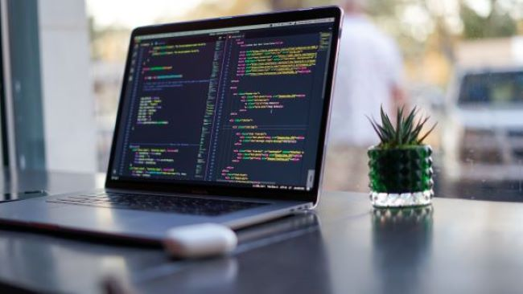

Last updated on Mar 12,2020 . 2 min read . Interests

Everyone has something he or she is passionate about and loves to do every time without getting bored, for me it is programming.
My first encounter with programming was in University(second semester). I started out with HTML, CSS and Python.It has all been a very wonderful experience. Writing codes gives me a sense of satisfaction, it is one of the things I enjoy doing.
I am really interested in programming because I have a passion for technology and finding solutions. Programming is really challenging and addictive. The feeling of an accomplishment when solving a complicated problem and being able to build something that makes people life easier is really exciting.